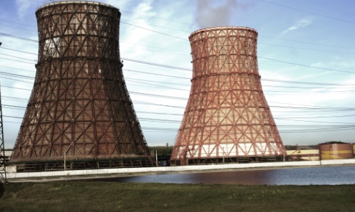

<!DOCTYPE html>
<html lang="pt-BR">
<head>
    <meta charset="UTF-8">
    <meta name="viewport" content="width=device-width, initial-scale=1.0">
    <title>geração de energia termoelétrica</title>
    <link rel="stylesheet" href="style.css">
</head>
<body>
    
</body>
</html>
<nav>
    <a href="index.html">O que é geração de energia elétrica</a>
    <a href="hidreletrica.html">O que é geração de energia
        hidroelétrica</a>
    <a href="termoeletrica.html">O que é geração de energia
        termoelétrica,</a>
    <a href="eolica.html">O que é geração de energia Eólica</a>
    <a href="solar.html">O que é geração de energia Solar,</a>
</nav>
<h1>=> O que é geração de energia
    termoelétrica</h1>
    <p>Energia termoelétrica, que pode ser chamada também de termelétrica, é a eletricidade gerada por meio da obtenção de calor de uma determinada fonte. Esse calor em geral vem da queima de combustíveis fósseis, como carvão mineral, gás natural ou derivados do petróleo.</p>
    <h2>vanatgens e desvantagens de uma termoeletrica</h2>
    <p>m suma, as usinas termelétricas oferecem a vantagem de fornecer energia rapidamente e em locais de difícil acesso, mas apresentam desvantagens significativas, como a poluição do ar, contribuição para o aquecimento global, custo mais elevado e dependência de recursos não renováveis</p>
    <div>
        
    </div>
    <small>Fonte:
        <a href="https://embrasul.com.br/vantagens-e-desvantagens-da-energia-termoeletrica/">EMBRASUL</a>
    </small>